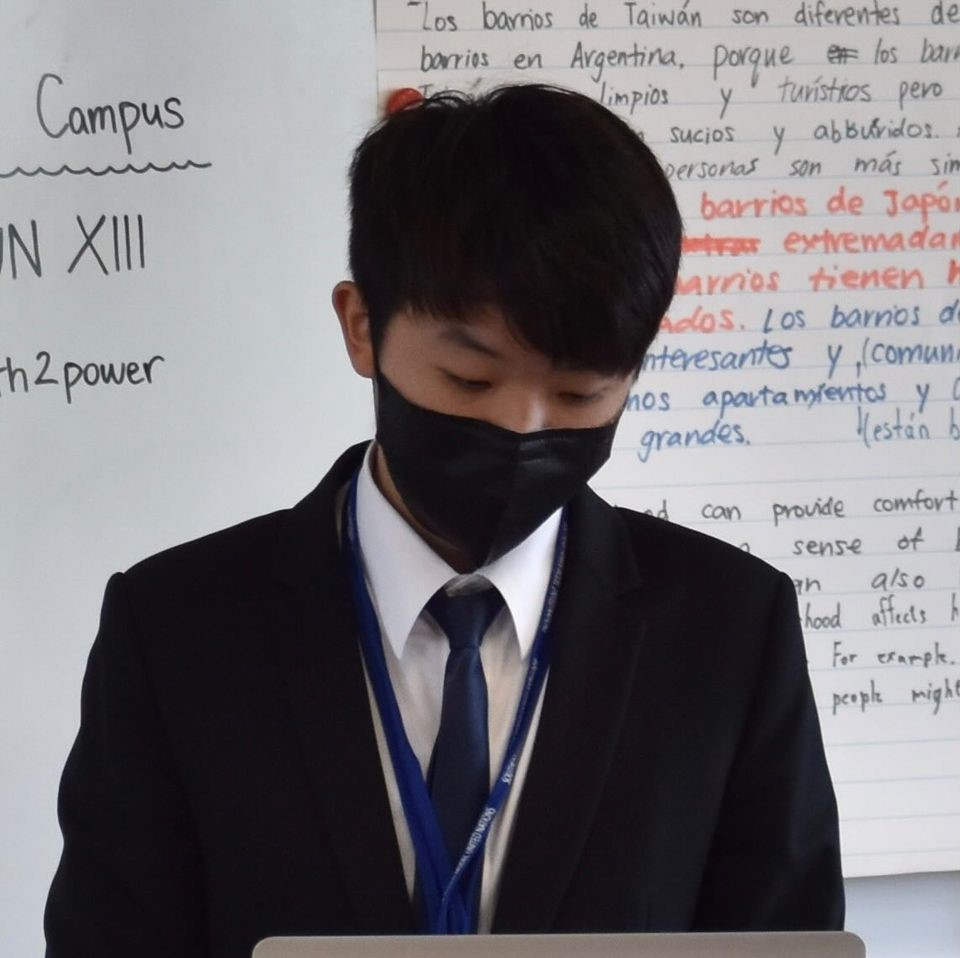
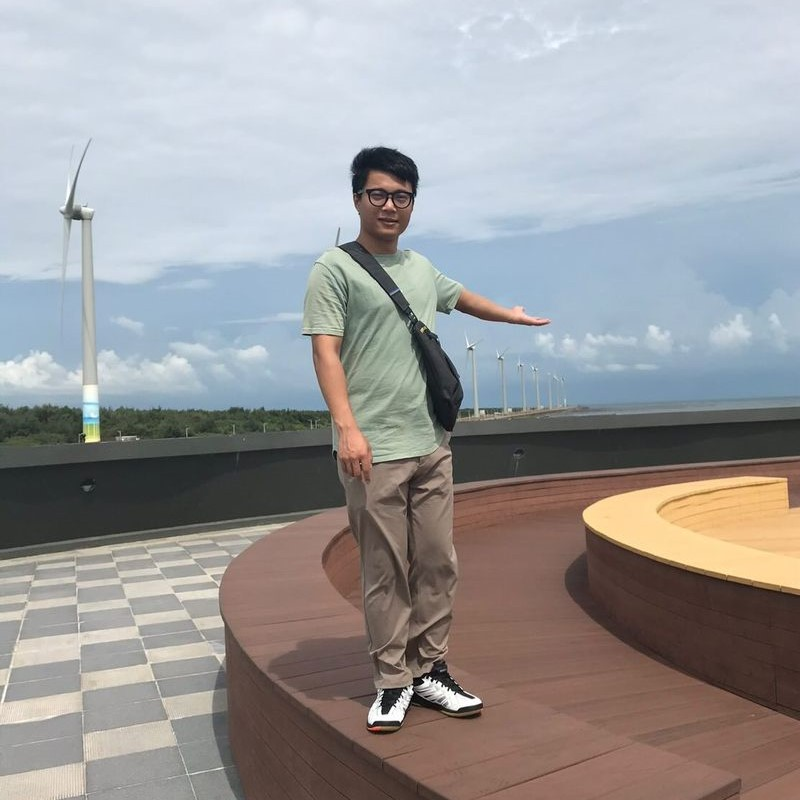

Bernardo Lin
"Dreams without goals are just dreams."

William Li
"Xcellerate your efforts."
NASA’s Earth Observing System has satellites that are constantly gathering more scientific data, allowing NASA to have one of the biggest open source scientific research databases. However, hunting through such a large database to gather information and data could be difficult or boring for the general public. Etones compares two different images of the same location in different time periods, then contrasts their difference in color, and outputs different percussion instruments if red, green or blue is increased or decreased. This allows users to create and listen to the unique music in an fun and interactive way, at the same time, educate them on the severe changes our planet is undergoing.
TechnoLion is a team from Taoyuan, made up of four typical members who share similar interests in programming, art, music, and space. This year, we presented a new idea by applying music and art to astronomy. Effectively using our outstanding skills and knowledge in software development. We create an artful project to help people look at the world in a more extraordinary way. Giving people a brand new experience and view of our world.
"Dreams without goals are just dreams."
"Xcellerate your efforts."
"Follow your heart, and listen when it speaks to you."
"Sometimes when I close my eyes, I can't see."